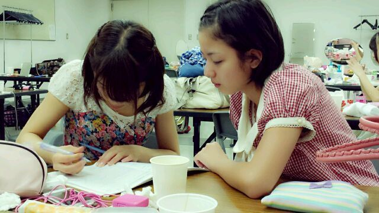

ほーい☆
ろってぃーでーす ))
今日は お昼から ずっと
お仕事よ〜(⌒‐⌒)
乃木坂浪漫の撮影なんだけどね
頑張るしかっ☆!!
そして 集合時間の2時間前に
ついてしまった あたしは,,,
あほだ。にっ(^ω^)v
駅のまわり何もないから
喫茶店入って
飲み物だけ頼んで
時間 つぶすんだから =・ε・= !!
おいしーおいしー。♪
生クリームにキャラメル かけて
下はほろ苦いシャーベット
だなっ! これは`・ω
シナモンとハチミツも
ちょいとつけたした... ♪
ジャーーん☆

この写真は、
この前の幕張の個別握手会さ★
まあや 最近
学校の宿題頑張ってて
分からない所は
みくも先生に
教えてもらってるのよ*・ω・*
かわいいでしょ。
まひろ まあや★みくも☆
大好きやねん !
まあや 学校の行事ごとは
まひろが親になった気分で
見に行くね ♪
ってことで
小さい頃から
待たされてばっかだった
まひろは時間つぶすのに
なれてるってばよー☆
ほな 暇な人 きてくださーい＼(^o^)／
以上 ろってぃー♪でした のし。